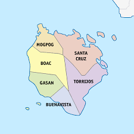

Marinduque
Marinduque is one of the many islands in the Philippines. It is a heart shaped island, and it is nicknamed, "The Heart of the Philippines." It is located in Southern Luzon, and the spoken dialect is "Tagalog." It is an island with 6 major municipalities: Boac, which is the capital, Gasan, Mogpog, Santa Cruz, Torrijos, and Buena Vista. Home to over 100,000 people, and the locals are all very friendly with everyone that visits the island. It is a small yet, a very beautiful island. One great thing about the island is that you will never get lost. The main road is one complete circle. If you have not arrived at the place you want, just keep driving on the main road and loop around.
Marinduque is one of the many islands in the Philippines. It is a heart shaped island, and it is nicknamed, "The Heart of the Philippines." It is located in Southern Luzon, and the spoken dialect is "Tagalog." It is an island with 6 major municipalities: Boac, which is the capital, Gasan, Mogpog, Santa Cruz, Torrijos, and Buena Vista. Home to over 100,000 people, and the locals are all very friendly with everyone that visits the island. It is a small yet, a very beautiful island. One great thing about the island is that you will never get lost. The main road is one complete circle. If you have not arrived at the place you want, just keep driving on the main road and loop around.